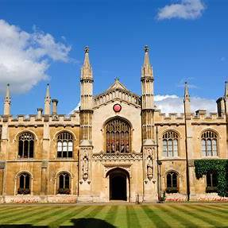
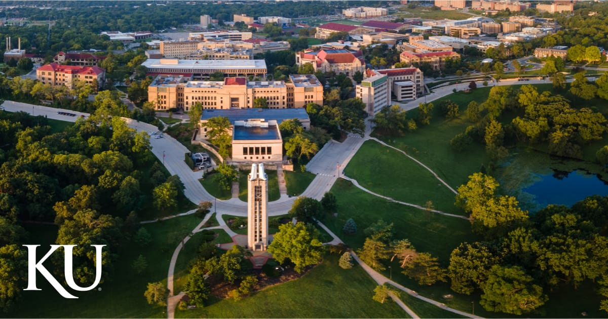

KENYATTA UNIVERSITY
The best university in East AFrica
HOME ADMINISTRATION FACULTIES ACADEMICS RESEARCH STUDENT NEWS ABOUT US

At Kenyatta University your journey begins with a world of opportunities. Whether you're a prospective student, a curious visitor, or a proud alum, we invite you to explore a campus community that’s vibrant, inclusive, and driven by purpose.
Here, academic excellence meets real-world experience. With top-ranked programs, expert faculty, and a commitment to innovation, we prepare students to lead with knowledge, integrity, and compassion. From the sciences and technology to the arts, business, education, and health—our classrooms are launching pads for ideas that change the world.
Beyond academics, Kenyatta University offers a dynamic campus life filled with student organizations, athletics, global experiences, and service opportunities. Our students don’t just learn—they connect, create, and make a difference, both on campus and far beyond.
Whether you're looking to apply, partner, research, or reconnect, there's a place for you at Kenyatta University . We’re proud of our diverse community, strong values, and the impact our students and faculty make every day.
Welcome to Kenyatta University —where your future begins, and your story takes shape.
Welcome all to the university of choice.